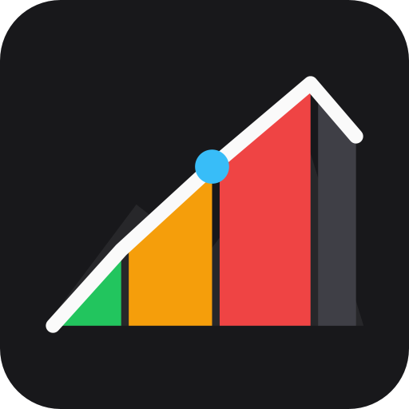

📸 Galería de Capturas en Karoo 3 Real

🏔️ Altimetría 3D e Encabezado Triple

🎨 Panel Pestaña Estilo

🏔️ Panel Pestaña 3D

📊 Panel Pestaña 2D

🚴 Panel Pestaña VAM

Extensión avanzada desarrollada por David García Pascual. Análisis dinámico de puertos, perfil 3D en relieve con cálculo topográfico, fuentes Google Sans Condensed, modo apaisado rotado a 90°, lectura triple de pendiente (Actual, Media y Máx), herraduras GPS e Índice Grado de Fatiga (GF) para Hammerhead Karoo 2 y Karoo 3.
🏔️ Altimetría 3D e Encabezado Triple
🎨 Panel Pestaña Estilo
🏔️ Panel Pestaña 3D
📊 Panel Pestaña 2D
🚴 Panel Pestaña VAM
Inspirado en los libros de ruta de las grandes vueltas profesionales, el gráfico de **Altimetría 3D** recrea el perfil completo del puerto en perspectiva isométrica con volumen de montaña, sub-seccionado de 50m dentro de cada km, sombreado degradado y máxima claridad de datos.
Carga directa de tipografías condensadas para números altos, estilizados y ultra-legibles en pantallas Karoo.
Expande la gráfica a un ancho gigante de 800px a pantalla completa liberando la compresión de píxeles.
Lectura simultánea en vivo de PENDIENTE ACTUAL, PENDIENTE MEDIA de la sección y PENDIENTE MÁXIMA.
Cálculo matemático vectorial GPS de giros cerrados (>120°) con marcas de herradura del 20% en el relieve.
Conmutadores independientes para filtrar Pueblos, Fuentes de Agua, Miradores y Cimas/Puertos.
Opción para calcular la pendiente % sobre la proyección horizontal del mapa, eliminando el sesgo de la hipotenusa en rampas extremas.
Perfil de bloques de distancia con código de colores según pendiente y alertas emergentes de ataque en rampas duras.
Índice científico de dureza acumulada que evalúa la dificultad real del puerto restante considerando pendiente, asfalto y rampa máxima.
Asistente de ritmo para dosificar el esfuerzo en puerto calculando la velocidad recomendada en km/h según la pendiente actual.
Sensor de tendencia inmediata de pendiente que elimina el retraso del altímetro barométrico y registra el pico de rampa máxima.
ALTGRAPH-v0.3.0.apk desde nuestro repositorio en GitHub.adb install -r ALTGRAPH-v0.3.0.apk